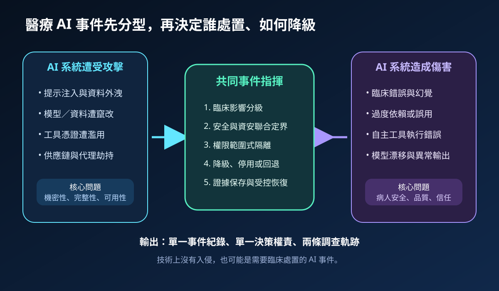
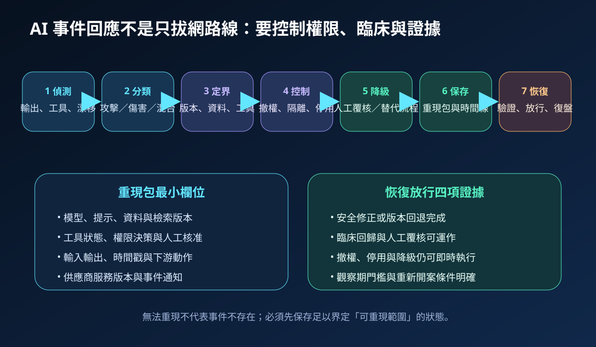
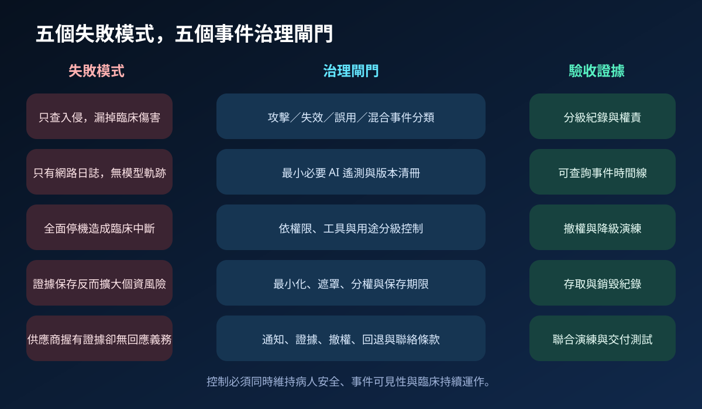

醫療資安國際觀察 · 2026-11-03
醫療 AI 事件如何安全停用：從攻擊、誤用到臨床降級
作者：Dr. William｜醫療資訊與資安治理實務工作者
醫療 AI 事件不一定有惡意入侵；模型錯誤、工具誤動作、資料漂移或過度依賴，同樣可能造成臨床傷害。事件回應必須同時處理資安攻擊與 AI 引發的失效，並保留可重現、可降級、可安全恢復的證據。
名詞解釋：AI 事件、權限範圍式控制與重現包
AI 事件可分為 AI 系統遭攻擊，以及 AI 因誤用、異常行為或失效造成傷害；兩者也可能重疊。權限範圍式控制不是一律關閉主機，而是撤銷特定代理身分、工具、資料來源或動作能力。重現包則保存模型、提示、資料、檢索、工具、權限決策、時間戳與下游動作，使調查能界定事件發生時的系統狀態。
國際現況與適用邊界
NIST 於 2026 年 11 月發布 IR 8621，將 AI 事件區分為系統遭受攻擊，以及誤用、異常行為或嚴重失效造成傷害，並指出推理層遙測、非人類身分、可撤銷權限、重現範圍與跨供應鏈責任是現有事件回應的缺口。NIST SP 800-61r3 提供組織層級的事件準備、回應、恢復與持續改善基線。FDA 2025 年 AI 醫療設備軟體功能草案則把風險管理、生命週期文件與上市後監測納入產品安全與有效性評估。NIST 文件屬美國官方技術指引與研討成果，FDA 文件為美國醫療產品監管草案，均不能直接視為台灣醫院的法定義務。
台灣適用原則：可把事件分類、遙測、撤權、臨床降級與供應商證據轉成院內治理要求；通報、醫材責任、個資處理與醫療品質程序仍須依台灣法令、主管機關公告、契約及實際事件判定。
規劃：先建立事件清冊與決策權
範圍應涵蓋模型、版本、提示與檢索設定、資料來源、代理身分、工具權限、供應商、臨床用途、替代流程與停用影響。事件指揮至少納入資安、資訊、AI／資料團隊、臨床單位、醫療品質、法遵與供應商窗口。指標可包含事件分類時間、權限撤銷時間、重現包完整率、臨床降級啟動時間、受影響病例定界完成率，以及恢復後觀察期異常率。
實作：七階段完成安全停用與恢復
- 偵測：同時監看資安訊號、模型輸出、工具動作、漂移與臨床回饋。
- 分類：判定攻擊、誤用、失效或混合事件，並以病人安全排序。
- 定界：鎖定模型、資料、工具、身分、病例與下游流程。
- 控制：依影響撤權、隔離資料、停用工具、回退版本或暫停服務。
- 臨床降級：切換人工覆核、替代流程與風險溝通。
- 證據保存：固定重現包、供應商紀錄、時間線與決策依據。
- 受控恢復：完成安全修正、臨床回歸、降級測試、觀察期與復盤。

風險：看得見不等於控得住
常見失敗包括只查網路入侵、只有傳統日誌、全面停機造成臨床中斷、保存提示與輸出時擴大個資暴露，以及供應商掌握模型證據卻沒有交付義務。緩解方式是採雙軌事件分類、最小必要 AI 遙測、分級隔離與降級劇本、證據遮罩與分權保存，並在契約中明定通知、版本、證據、撤權、回退及聯合演練接口。

可執行清單
- 是否能區分 AI 遭攻擊、AI 造成傷害與混合事件？
- 是否保存模型、提示、資料、檢索、工具、身分與時間戳版本？
- 代理身分與工具權限能否在目標時間內撤銷？
- 高影響 AI 是否有人工覆核、停用、回退與替代流程？
- 證據保存是否完成最小化、遮罩、分權與期限設定？
- 供應商是否承諾事件通知、證據交付、版本重現與聯合演練？
來源
- NIST｜NIST IR 8621: Workshop on SI Incident Management（發布：2026-11；查閱：2026-11-03）
- NIST｜SP 800-61r3: Incident Response Recommendations and Considerations for Cybersecurity Risk Management（發布：2025-04；查閱：2026-11-03）
- U.S. FDA｜Artificial Intelligence-Enabled Device Software Functions: Lifecycle Management and Marketing Submission Recommendations（草案：2025-01；查閱：2026-11-03）
內容說明
本文依健康台灣深耕計畫相關治理內容整理，並參考 NIST AI 事件管理與事件回應資料、FDA AI 醫療設備生命週期草案，說明事件分類、權限控制、臨床降級、證據保存與受控恢復；不把美國技術指引或監管草案視為台灣醫療機構的法定義務，也不取代主管機關公告、醫療品質程序、產品風險評估、個資審查、契約審查或法律意見。